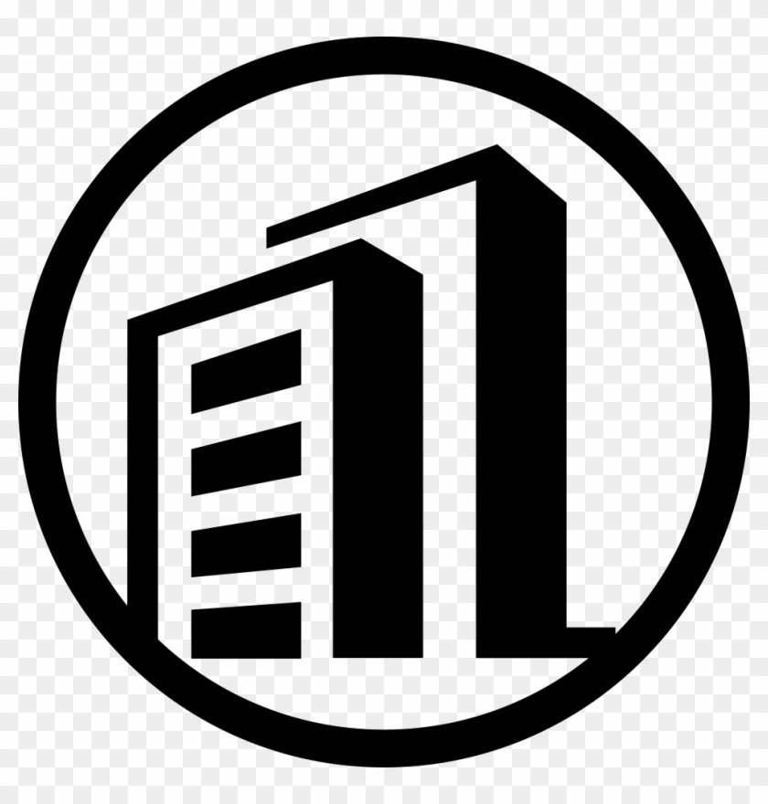

<ion-header mode='ios'>
  <ion-toolbar>
    <ion-buttons slot="start">
      <ion-back-button ></ion-back-button>
    </ion-buttons>
    <ion-title>Parceiros</ion-title>
  </ion-toolbar>
</ion-header>

  <ion-toolbar>
    <ion-toolbar mode="ios" class="header-busca" >
      <ion-searchbar animated placeholder="Pesquisar" slot='start' (ionChange)="parceiroSearch($event)"></ion-searchbar>
    </ion-toolbar>
  </ion-toolbar>

  <ion-fab vertical="top" horizontal="start" slot="fixed">
    <ion-fab-button color="secondary" (click)="closeModal()">
      <ion-icon item-right name="close-circle-outline"></ion-icon>
    </ion-fab-button>
  </ion-fab>

<ion-fab vertical="bottom" horizontal="end" slot="fixed">
  <ion-fab-button color="success" (click)="functionExecute('modalContatoAddParceiros',{parceiroId: parceiroId})">
    <ion-icon name="add"></ion-icon>
  </ion-fab-button>
</ion-fab>

<ion-content>
  <ion-list *ngIf="!parceirosItems.length">
    <ion-item>
      <ion-avatar slot="start">
        <ion-skeleton-text animated></ion-skeleton-text>
      </ion-avatar>
      <ion-label>
        <h3>
          <ion-skeleton-text animated style="width: 50%"></ion-skeleton-text>
        </h3>
        <p>
          <ion-skeleton-text animated style="width: 80%"></ion-skeleton-text>
        </p>
        <p>
          <ion-skeleton-text animated style="width: 30%"></ion-skeleton-text>
        </p>
      </ion-label>
    </ion-item>
  </ion-list>
  <ion-list *ngIf="parceirosItems">
    <ion-item-sliding #i *ngFor="let item of filtered; let i = id" >

      <ion-item  mode='ios' detail='false' button style="padding: 0 !important;" (click)="i.open()">

        
        <ion-avatar style="height: auto; width: auto; margin: 5px;">
          <!-- <ion-icon name="business-outline" [ngStyle]="{'font-size': '50px', 'color' : item.photo}" class="ion-icon"></ion-icon> -->
          
        </ion-avatar>
        <ion-badge class="badgefavorito" *ngIf="item.favorito == true "></ion-badge>

        <ion-label style="padding-left: 10px;">
          <h3><strong>{{item.apelido | titlecase}}</strong></h3>
          <p>
            <ion-label>
                <p><ion-icon name="people-outline"></ion-icon> &nbsp; {{item.nome}}</p>
                <p *ngIf="item.documento != '' && item.documento != undefined"><ion-icon name="call-outline"></ion-icon> &nbsp; CNPJ: {{item.documento}}</p>
            </ion-label>  
          </p>
        </ion-label>

      </ion-item>

      <ion-item-options side="end">
        <ion-item-option color="secondary" (click)="functionExecute('modalContatoAddParceiros',{parceiroId: item.id})"><ion-icon name="pencil-outline"></ion-icon></ion-item-option>
        <ion-item-option color="success" (click)="acaoClique(item.id,item.nome)"><ion-icon name="checkmark-outline" slot="icon-only"></ion-icon></ion-item-option>
      </ion-item-options> 

    </ion-item-sliding>
  </ion-list>

</ion-content>
